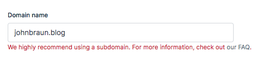
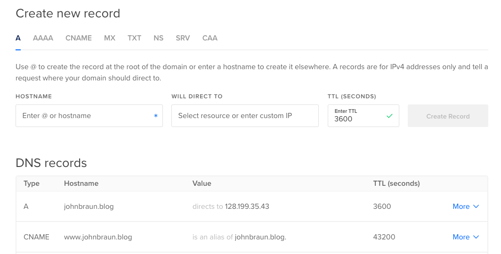
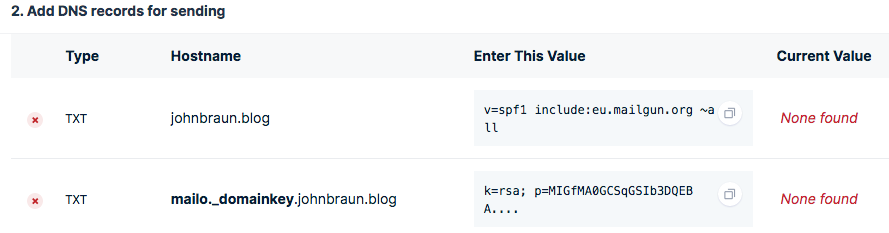
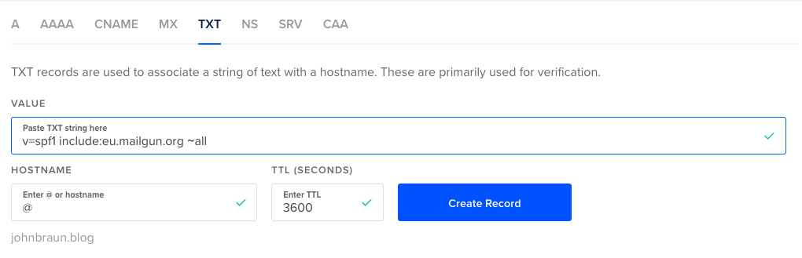
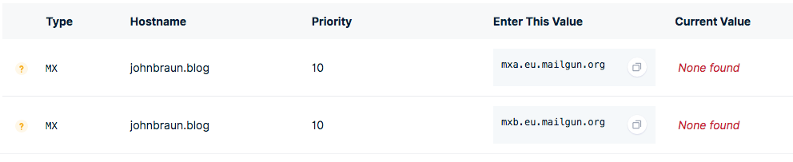
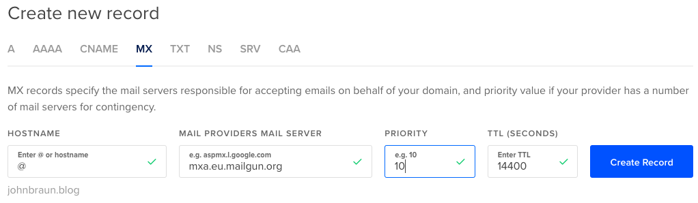
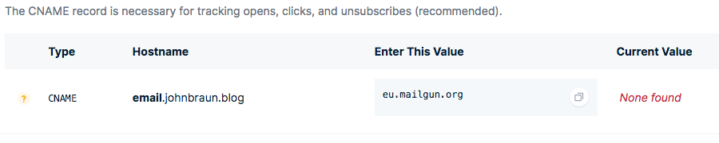
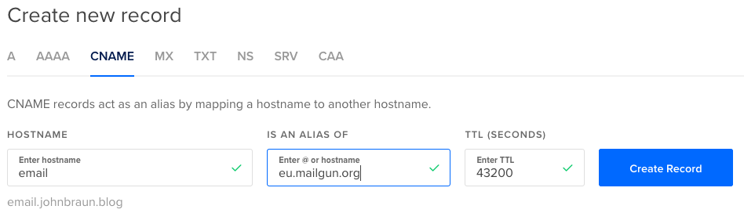
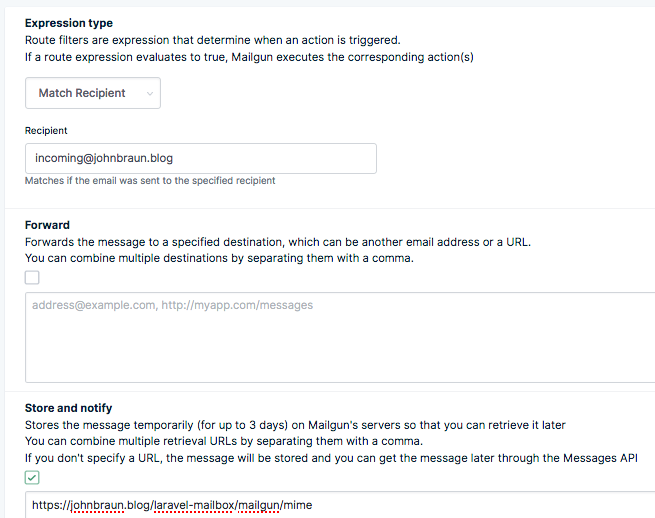
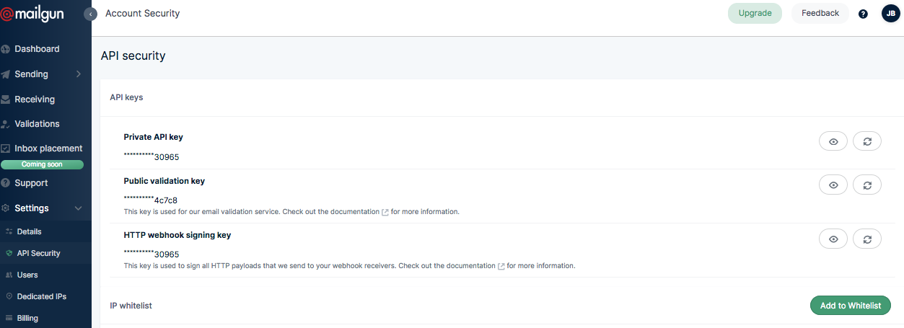

Handle incoming mail in Laravel
- Published: 29-07-2019
Introduction
Sending e-mails with laravel couldn't be simpler using the Mail facade, but what if you want to act on incoming e-mails instead?
For example, if you want to build a helpdesk system, where users can respond to their tickets directly via e-mail. Or maybe you want to publish posts to your blog via e-mail.
That's where the 📬 Laravel Mailbox package by Marcel Pociot comes in!
In this post, I want to guide you through the steps to create an application which listens to incoming e-mails and perform an action based on its sender (from), recipient address (to) or subject. Alternatively, you can also catch all incoming mail.
Requirements
Domain name and Server
You'll need to own a domain name with access to its DNS management, a server to host the application and a mail service that listens to incoming e-mail and forwards them to the application.
Mailgun account
Laravel Mailbox offers support for the mail services Mailgun, Sendgrid and Postmark out of the box. For this article, I chose to use Mailgun since I am most familiar with their service and I think they offer a reasonably generous free plan.
PHPUnit
Since I'll demonstrate driving out the desired functionality using TDD, you will need to have PHPUnit working on your system. If you are new to this, I'd recommend to check out this free video on Laracasts.
Note: references to "example.com" or "johnbraun.blog" should be replaced by your own domain.
Setting up Mailgun with your domain name
Plans
Mailgun offers a Free plan which allows you to send 10 000 e-mails / month, limited to a sandbox domain. If you provide your payment details (credit card) you'll be upgraded to the Concept plan, which is still free but unlocks the ability to add custom domains. Be aware that you'll be charged if you send more than the 10 000 free e-mails. You're allowed to receive an unlimited number of e-mails.
Adding a domain
Visit the domains page in the Sending menu section and choose Add your domain. Mailgun will suggest you to use a subdomain like mg.example.com. However, if we want to be able to receive e-mails on info@example.com (instead of info@mg.example.com) we'll need to ignore the red warning and register example.com. Choose your region (EU / US) and confirm.

Setting up DNS records
After adding a new domain, you'll be asked to add some DNS records:
- TXT records (2x)
- MX records (2x)
- CNAME record (1x)
Those are (most probably) managed by the company you've registered your domain name with.
As long as your registrar supports manual configuration of the DNS records it doesn't matter which company you choose. Personally, I use Hover for registration of my domains and DigitalOcean to mange the DNS settings (by directing the nameservers to DigitalOcean) since my server lives there as well.

Check out these guides for specific configuring of DNS records at GoDaddy, NameCheap, Network Solutions, Rackspace Email & Apps, Rackspace Cloud DNS, Amazon Route 53 and Digital Ocean.
TXT records
To be able to send e-mail with Mailgun, you'll need to configure two TXT records.

First, using the root hostname (using an "@" in DigitalOcean) with the value "v=spf1 include:eu.mailgun.org ~all".

The second TXT record indicates your domain key using the provided subdomain prefix, "mailo._domainkey" in the example below. The specific subdomain you'll need to create will vary.
MX records
Next, to be able to receive e-mails, we'll need to add two MX records.

Since we're not using a subdomain, we'll add those MX records on our root hostname, which is shown below (for DigitalOcean). Important: if you do use a subdomain, you'll need to configure the MX records for the subdomain.

Repeat this step for the other (mxb.eu.mailgun.org) MX record.
CNAME record
Lastly, add a CNAME record for the "email" subdomain:


Verify DNS Settings
After you've configured the DNS records, hit 'verify DNS settings' on the Mailgun page after which a green tick should appear, indicating that everything was properly configured.
You're now ready to send and receive incoming mail on this domain.
Installing Laravel Mailbox
Pull in the Laravel Mailbox package in your Laravel app using composer.
composer require beyondcode/laravel-mailbox
Following the installation instructions, at the documentation page:
Publish the migrations
php artisan vendor:publish --provider="BeyondCode\Mailbox\MailboxServiceProvider" --tag="migrations"
Run the migrations
php artisan migrate
Publish the config file
php artisan vendor:publish --provider="BeyondCode\Mailbox\MailboxServiceProvider" --tag="config"
Now that the package is ready, let's dive into driving out some functionality using TDD (Test Driven Development).
Testing
For this demo we will simply record a received e-mail in a received_mails table containing a 'sender', 'subject' and 'body' of the e-mail. We'll drive out this behaviour using a feature test.
php artisan make:test IncomingMailTest
Setting up our test
Environment file
To be able to test this package locally, instead of receiving a call to the Mailgun webhook, the Laravel Mailbox package can listen to e-mails sent to the log. Therefore, we can specify MAIL_DRIVER=log and MAILBOX_DRIVER=log in our .env file.
Using the log driver in our tests
In the setup method of our test, we have to explicitly tell PHPunit to use the log driver, otherwise it will default to the "array" driver.
<?php
class IncomingMailTest extends TestCase {
use RefreshDatabase;
public function setUp(): void
{
parent::setUp();
config(['mail.driver' => 'log']);
}
}
Writing a test by wishful thinking
Let's write a test that will verify incoming e-mails are saved to the database, so we can later act on them. Note: not all of the code described exists yet, we'll let our test tell us to implement / write the missing pieces.
<?php
namespace Tests\Feature;
use App\ReceivedMail;
use App\Mail\TestMail;
use Illuminate\Support\Facades\Mail;
class IncomingEmailTest extends TestCase {
+ setUp() ...
/** @test **/
function incoming_mail_is_saved_to_the_mails_table() {
// Given: we have an e-mail
$email = new TestMail(
$sender = 'sender@example.com',
$subject = 'Test E-mail',
$body = 'Some example text in the body'
);
// When: we receive that e-mail
Mail::to('incoming@johnbraun.blog')->send($email);
// Then: we assert the e-mails (meta)data was stored
$this->assertCount(1, ReceivedMail::all());
tap(ReceivedMail::first(), function ($mail) use ($sender, $subject, $body) {
$this->assertEquals($sender, $mail->sender);
$this->assertEquals($subject, $mail->subject);
$this->assertStringContainsString($body, $mail->body);
});
}
}
Note: Are you new to Laravel's tap() function? Check out Taylor Otwell's post on one of his favorite helpers.
Create a mailable
The first error we'll ecounter is that there is no IncomingTestMail mailable class, so let's create it:
php artisan make:mail TestMail --markdown="emails.tests.testmail"
Open up the mailable, and accept the sender's address, subject and body in the constructor and store them in the public properties.
<?php
class TestMail extends Mailable {
public $sender;
public $subject;
public $body;
public function __construct($sender, $subject, $body) {
$this->sender = $sender;
$this->subject = $subject;
$this->body = $body;
}
public function build() {
return $this
->from($this->sender)
->subject($this->subject)
->markdown('emails.tests.testmail');
}
}
In the markdown e-mail, echo out the body:
@component('mail::message')
{{ $body }}
Thanks,<br>
{{ config('app.name') }}
@endcomponent
Create a ReceivedMail model
If we run the test again at this stage, we're missing a ReceivedMail model, so let's create it, together with a migration.
php artisan make:model ReceivedMail -m
First, make all properties on our model fillable.
<?php
class ReceivedMail extends Model {
protected $guarded = [];
}
Next, add the 'sender', 'subject' and 'body' columns to our received_mails_table migration file.
<?php
public function up() {
Schema::create('received_mails', function (Blueprint $table) {
$table->bigIncrements('id');
$table->string('sender');
$table->string('subject');
$table->text('body');
$table->timestamps();
});
}
Run the migration
php artisan migrate
Defining a Mailbox
Running the test again, shows Failed asserting that actual size 0 matches expected size 1. This makes sense, since we don't act on incoming mail yet. We can easily set up a listener in the AppServiceProvider, referring incoming e-mails addressed to a certain address (Mailbox::to()) or coming from a specific address (Mailbox::from()) to a callback or - as we'll use in this case - an invokable MailHandler class. To learn all of the available options, check out this page in the documentation.
<?php
use App\MailHandler;
use BeyondCode\Mailbox\Facades\Mailbox;
class AppServiceProvider extends ServiceProvider {
public function boot() {
Mailbox::to('incoming@johnbraun.blog', MailHandler::class);
}
}
Note: you are able to use parameters (see docs) in the matching rules, which will be passed down to the handling class as additional arguments to the *InboundEmail $email*.
Create an invokable MailHandler class
In the app folder, let's create MailHandler.php and set up a magic __invoke() method, which gets passed in an InboundEmail object where we can call a from(), subject() and text() methods to obtain the corresponding data. All available methods are listed in the documentation.
<?php
namespace App;
use App\ReceivedMail;
use BeyondCode\Mailbox\InboundEmail;
class MailHandler {
public function __invoke(InboundEmail $email) {
ReceivedMail::create([
'sender' => $email->from(),
'subject' => $email->subject(),
'body' => $email->text(),
]);
}
}
Our test is passing
If we run our test now, it passes which means we can now listen for e-mails to 'incoming@our-domain.com', however we still first need to setup an endpoint for Mailgun, which we'll do in the next section.
Setting up for production
Installing GuzzleHTTP
Since Laravel requires Guzzle for working with the Mailgun driver, let's first install this dependency:
composer require guzzlehttp/guzzle
Configuring a webhook in Mailgun
We're almost ready to receive inbound e-mails on our domain, we just need to configure Mailgun to call our application whenever it receives mail. To do this, first push your application to the domain and make sure it is accessible (externally).
In Mailgun, hit up the "receiving" link in the menu and choose "create route". Here we can specify to either catch all e-mails, or a selection. Let's only catch e-mails sent to "incoming@johnbraun.blog".

Check "store and notify" and fill in the endpoint for the Mailgun driver (as described here): https://****your domain****/laravel-mailbox/mailgun/mime. Give your route a description and hit the create button.
Update production environment variables
Lastly, we'll need to specify the Mailgun driver in the environment file. Add/update the following properties in your .env file. The Mailgun secret key is obtained from the "API security" page under the "settings" tab. You'll need to provide the private key.
MAILBOX_DRIVER=mailgun
MAILBOX_MAILGUN_KEY=......
MAIL_DRIVER=mailgun
MAILGUN_DOMAIN=johnbraun.blog
MAILGUN_SECRET=........
MAILGUN_ENDPOINT="api.eu.mailgun.net"

Ready for action!
At this stage, you're able to send mails to your defined address (in our demo case 'incoming@johnbraun.blog') after which a new ReceivedMail model wil be saved to the database.
Don't forget, that there are a lot of other things you could do. To name a few: it can handle attachments, send an auto-reply, capture the HTML contents of the e-mail, etc.
Check the available methods in the Laravel Mailbox documentation.
I hope this post helped you to make a start if you're interested to start receiving and handling inbound e-mail.